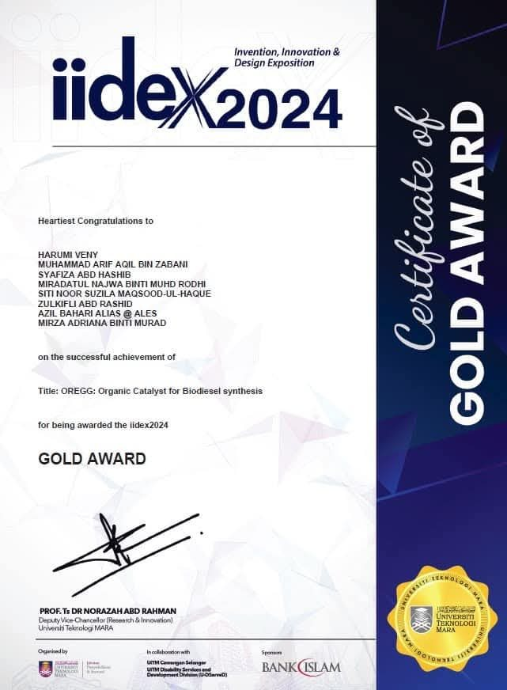
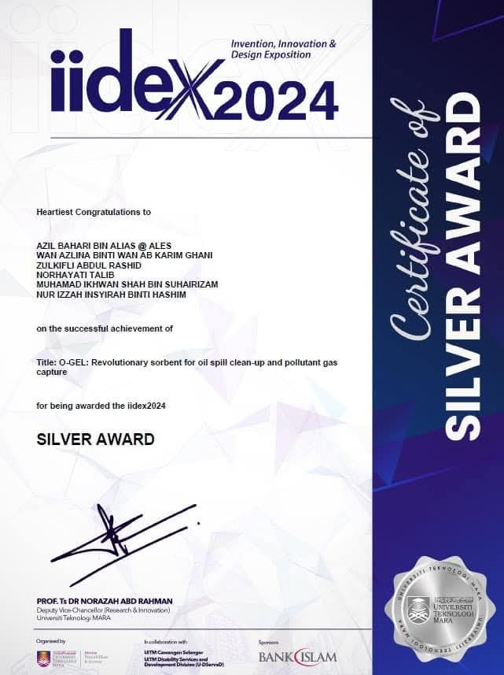
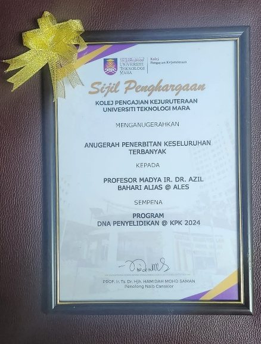
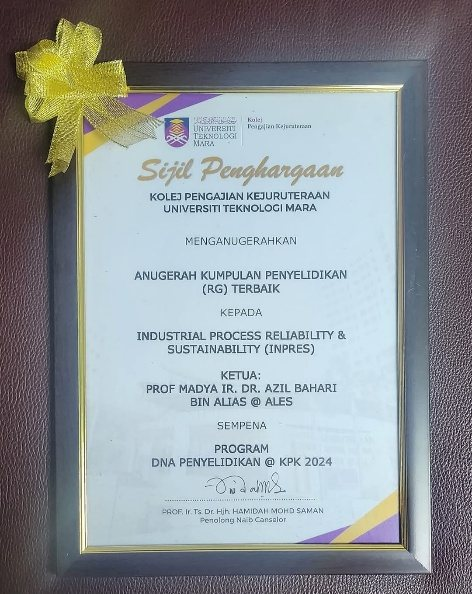
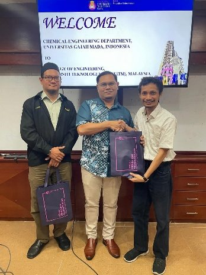
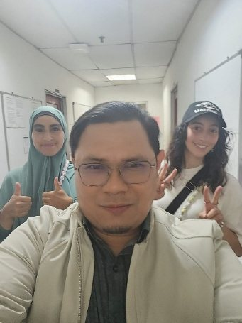
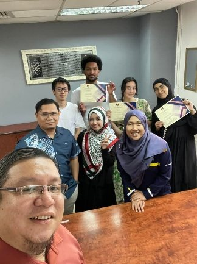
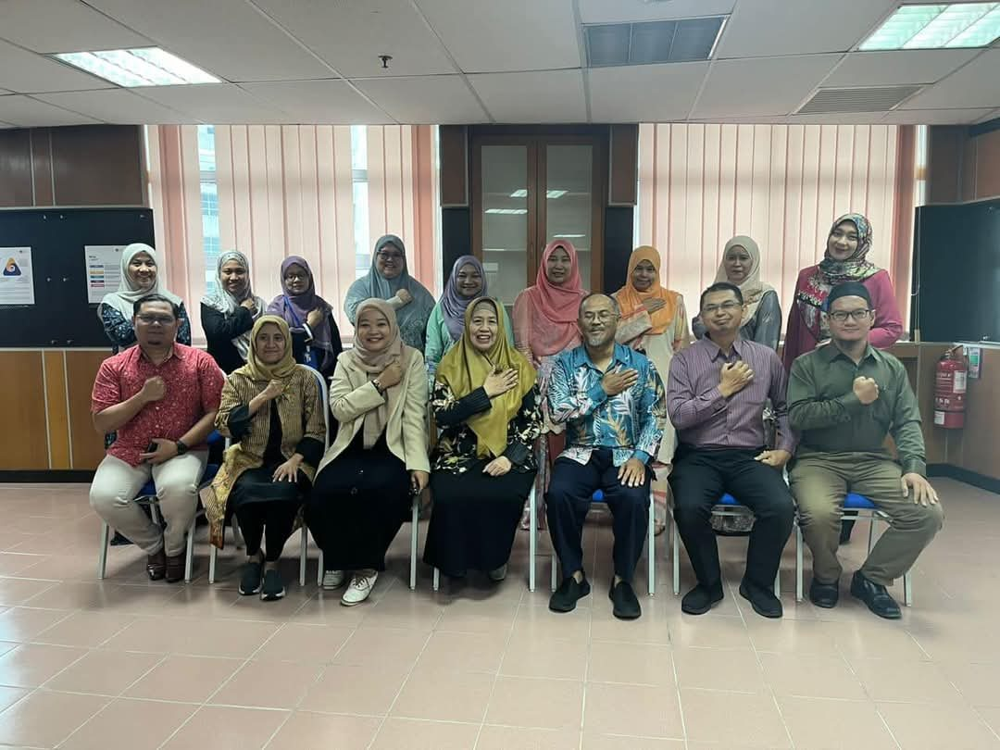

Recognition
Awards for inventions in Malaysia and abroad, registered intellectual property and international collaborations.
Figures as of 25 September 2026.
Obelisk – The World Invention Award
Overall winner at the British Invention Show, alongside a Gold Medal at the same show.
Excellent Scientist Award
From Malaysia's Ministry of Science, Technology & Innovation, the same year as a Gold Medal in Geneva.
Awards, newest first
Each entry gives the award, the awarding body and the year.




Registered and pending works
| Year | Work | Role | Status |
|---|---|---|---|
| 2024 | O-Gel: an Effective and Suitable Ultra Sorbent for Oil Spill Cleanup Copyright | Main Inventor | Registered (MyIPO) |
| 2022 | Natural Oil Absorbent Copyright | Co-Inventor | Registered (MyIPO) |
| 2022 | Innovation for Hazardous Area Classification for Dust Explosive Zoning Using Quantitative Method (HAZDEX) Copyright | Co-Inventor | Registered (MyIPO) |
| 2022 | Intensive DOSO (I-DOSO) Module 1a: Lesson Learned MHI Accident Copyright | Co-Inventor | Registered (MyIPO) |
| 2022 | Intensive DOSO (I-DOSO) Module 1b: Understanding CIMAH DOSO Guideline Copyright | Co-Inventor | Registered (MyIPO) |
| 2021 | Phoenix Maven Lip Balm Copyright | Co-Inventor | Registered (MyIPO) |
| 2021 | Biotic Scented Candles Copyright | Co-Inventor | Submitted to MyIPO |
| – | Wood char: a new sustainable energy resource Patent (filing) | Inventor | Patent filing |
| – | Hydrogel CHARSH (HC) a powerful adsorbent Copyright | – | – |
| – | Smart vapour cloud explosion incident identifier tool analysis (SAVii) Copyright | – | – |
| – | Optimising facility siting and layout through mapping risk estimates using SAVii V2 Copyright | – | – |
A research network across four continents
Partners in nine countries, two international keynotes in 2024, four international postgraduates and more than eleven international interns hosted.
UiTM Shah Alam Choose a country to turn the globe and read the partnership.
Keynote speaker at ICESTA-2024 and ICCEEAS-2024 (Universitas Sebelas Maret); person in charge of the MoA with UPN “Veteran” Jawa Timur; joint MOOC research with UNESA.
Research and co-publication with Northern Technical University, Al-Ayen University and Al-Bayan University; two PhD students from Northern Technical University.
Collaboration with Jawzjan University and Faryab University; one PhD and one MSc student from Jawzjan University.
Research collaboration with the University of Tabriz.
Research collaboration with Sheffield Hallam University.
Academic attachment at M. Auezov South Kazakhstan University, September 2025.
Ongoing collaboration with the University of Melbourne, his PhD alma mater, including a joint Q1 paper.
Principal Investigator of a Malaysia–Thailand Strategic Research Partnership grant (2026–2028).
Hosted research interns: nine students from Université Sorbonne Paris Nord, plus students from CESI École d'Ingénieurs and NIT Ube College, Japan.




Reviewing and assessment
Reviewer for Q1 journals
- Energy (Elsevier)
- Fuel Processing Technology (Elsevier), 3 manuscripts
- Journal of Cleaner Production (Elsevier)
Editorial & conferences
- Editorial board, Malaysian Journal of Chemical Engineering & Technology (2017)
- Reviewer, ICGSCE 2014 & 2017, AMPE 2015, Advanced Research Materials 2015
External assessment
- External assessor for promotion to Associate Professor, International Islamic University Malaysia
- Grant evaluator: FRGS (faculty, UiTM and MOHE), LESTARI, BESTARI, GIP, PRGS